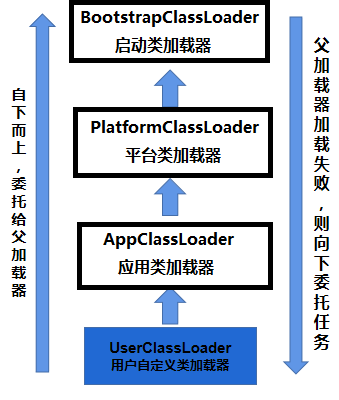

Java反射机制是指在运行时动态获取类的信息或动态调用对象的方法、修改属性等操作。主要核心就是Class类、Constructor类、Field类、Method类等API。 反射机制主要应用于框架开发、动态代理、ORM框架、JDBC驱动等方面。通过反射机制，程序员能够获得在编译期间不被知晓的类、属性、方法等信息。但是反射机制的性能较低，常常被认为是一种牺牲性能换取灵活性的实现方式。
Java反射机制核心包：java.lang.reflect.*
Java反射机制核心类：
java.lang.Classjava.lang.reflect.Fieldjava.lang.reflect.Methodjava.lang.reflect.Constructorjava.lang.reflect.ModifierJava中获取Class对象有以下三种方式：
对象的getClass()方法来获取Class对象Object obj = new Object();
Class clazz = obj.getClass();
类.class”语法：可以使用“类.class”语法来获取Class对象Class clazz = Object.class;
Class类的forName()方法：可以使用Class类的forName()方法来获取Class对象Class clazz = Class.forName("java.lang.Object");
package com.powernode.javase.reflect;
/**
* 1. 反射机制是JDK中的一套类库，这套类库可以帮助我们操作/读取 class 字节码文件。
* 2. 后期学习的大量的java框架，底层都是基于反射机制实现的，所以必须掌握（要能够数量的使用反射机制中的方法）。
* 3. 反射机制可以让程序更加灵活。怎么灵活？？？？
* 4. 反射机制最核心的几个类：
* java.lang.Class：Class类型的实例代表硬盘上的某个class文件。或者说代表某一种类型。
* java.lang.reflect.Field：Field类型的实例代表类中的属性/字段
* java.lang.reflect.Constructor: Constructor类型的实例代表类中的构造方法
* java.lang.reflect.Method: Method类型的实例代表类中的方法
* 5. 在java语言中获取Class的三种方式：
* 第一种方式：Class c = Class.forName("完整的全限定类名");
* 注意：
* 1.全限定类名是带有包名的。
* 2.是lang包下的，java.lang也不能省略。
* 3.这是个字符串参数。
* 4.如果这个类根本不存在，运行时会报异常：java.lang.ClassNotFoundException
* 5.这个方法的执行会导致类的加载动作的发生。
* 第二种方式：Class c = obj.getClass();
* 注意：这个方法是通过引用去调用的。
* 第三种方式：在java语言中，任何一种类型，包括基本数据类型，都有 .class 属性。用这个属性可以获取Class实例。
*/
public class ReflectTest01 {
public static void main(String[] args) throws ClassNotFoundException {
// stringClass 就代表 String类型。
// stringClass 就代表硬盘上的 String.class文件。
Class stringClass = Class.forName("java.lang.String"); // 必须写全类名
// 获取 User 类型
Class userClass = Class.forName("com.powernode.javase.reflect.User");
String s1 = "动力节点";
Class stringClass2 = s1.getClass();
// 某种类型的字节码文件在内存当中只有一份。
// stringClass 和 stringClass2 都代表了同一种类型：String类型
System.out.println(stringClass == stringClass2); // true
User user = new User("zhangsan", 20);
Class userClass2 = user.getClass();
System.out.println(userClass2 == userClass); // true
// intClass 代表的就是基本数据类型 int类型
Class intClass = int.class;
Class doubleClass = double.class;
Class stringClass3 = String.class;
Class userClass3 = User.class;
System.out.println(stringClass3 == stringClass); // true
}
}
class User {
static {
System.out.println("User类的静态代码块执行了！");
}
private String name;
private int age;
public User(String name, int age) {
this.name = name;
this.age = age;
}
public User() {
System.out.println("User类的无参数构造方法执行了！");
}
public String getName() {
return name;
}
public void setName(String name) {
this.name = name;
}
public int getAge() {
return age;
}
public void setAge(int age) {
this.age = age;
}
}
在属性配置文件中配置类名：classInfo.properties
className=java.util.Date
通过IO流读取属性配置文件，获取类名，再通过反射机制实例化对象。
如果要创建其他类的实例对象，只需要修改classInfo.properties配置文件即可。
这说明反射机制可以让程序变的更加灵活。在进行系统扩展时，可以达到OCP开闭原则。
下面的例子就是通过Class去创建对象的案例：
package com.powernode.javase.reflect;
/**
* 获取到Class之后能干啥？
* 1. 至少可以实例化对象。
*/
public class ReflectTest02 {
public static void main(String[] args) throws Exception{
// 获取到Class类型的实例之后，可以实例化对象
// 通过反射机制实例化对象
Class userClass = Class.forName("com.powernode.javase.reflect.User"); // userClass 代表的就是 User类型。
// 通过userClass来实例化User类型的对象
// 底层实现原理是：调用了User类的无参数构造方法完成了对象的实例化。
// 要使用这个方法实例化对象的话，必须保证这个类中是存在无参数构造方法的。如果没有无参数构造方法，则出现异常：java.lang.InstantiationException
User user = (User)userClass.newInstance();
System.out.println(user);
User user2 = (User)userClass.newInstance();
System.out.println(user == user2); // false
}
}
class User{
public User() {
System.out.println("User类的无参数构造方法执行了！");
}
}
// User类的无参数构造方法执行了！
// com.powernode.javase.reflect.User@473b46c3
// User类的无参数构造方法执行了！
// false
实际应用中，类名可以通过配置文件获取，如下：
package com.powernode.javase.reflect;
import java.util.ResourceBundle;
/**
* 读取属性配置文件，获取类名，通过反射机制实例化对象。
* 通过这个案例的演示就知道反射机制是灵活的。这个程序可以做到对象的动态创建。
* 只要修改属性配置文件就可以完成不同对象的实例化。
*/
public class ReflectTest03 {
public static void main(String[] args) throws Exception {
// 资源绑定器
ResourceBundle bundle = ResourceBundle.getBundle("com.powernode.javase.reflect.classInfo");
// 通过key获取value
String className = bundle.getString("className");
// 通过反射机制实例化对象
Class classObj = Class.forName(className);
// 实例化
Object obj = classObj.newInstance();
System.out.println(obj);
}
}
classInfo.properties
className=java.util.Date
反射Field包括两方面：
一方面：通过反射机制获取Field
Field field = clazz.getDeclaredField("fieldName"); // 通过属性名获取
Field[] fields = clazz.getDeclaredFields(); // 获取所有的属性，包括私有的
另一方面：通过Filed访问对象的属性
Object fieldValue = field.get(myObject); // 读取某个对象的属性值
field.set(myObject, newValue); // 修改某个对象的属性值
package com.powernode.javase.reflect;
import java.lang.reflect.Field;
import java.lang.reflect.Modifier;
/**
* 关于反射机制中的 java.lang.reflect.Field（代表的是一个类中的字段/属性）
*/
public class ReflectTest04 {
public static void main(String[] args) throws Exception{
// 获取Vip类
Class vipClass = Class.forName("com.powernode.javase.reflect.Vip");
// 获取Vip类中所有 public 修饰的属性/字段
// Field[] fields = vipClass.getFields();
// 获取Vip类中所有的属性/字段，包括私有的
Field[] fields = vipClass.getDeclaredFields();
/*
System.out.println(fields.length);
// 遍历数组
for(Field field : fields){
System.out.println(field.getName());
}*/
for(Field field : fields){
// 获取属性名
System.out.print("属性名: " + field.getName() + "\t");
// 获取属性类型
Class fieldType = field.getType();
// 获取属性类型的简单名称
System.out.print("属性类型: " + fieldType.getSimpleName() + "\t");
// 获取属性的修饰符
//System.out.println(field.getModifiers());
System.out.println("修饰符: " + Modifier.toString(field.getModifiers()));
}
}
}
class Vip {
// Field
public String name;
private int age;
protected String birth;
boolean gender;
public static String address = "北京海淀";
public static final String GRADE = "金牌";
}
package com.powernode.javase.reflect;
import java.lang.reflect.Field;
import java.lang.reflect.Modifier;
/**
* 反编译（反射） java.lang.String 类中所有的属性。
*/
public class ReflectTest06 {
public static void main(String[] args) throws Exception{
// 获取String类
Class stringClass = Class.forName("java.lang.String");
// 字符串拼接
StringBuilder sb = new StringBuilder();
// 获取类的修饰符
sb.append(Modifier.toString(stringClass.getModifiers()));
sb.append(" class ");
//sb.append(stringClass.getSimpleName());
sb.append(stringClass.getName());
sb.append(" extends ");
// 获取当前类的父类
sb.append(stringClass.getSuperclass().getName());
// 获取当前类的实现的所有接口
Class[] interfaces = stringClass.getInterfaces();
if(interfaces.length > 0){
sb.append(" implements ");
for (int i = 0; i < interfaces.length; i++) {
Class interfaceClass = interfaces[i];
sb.append(interfaceClass.getName());
if(i != interfaces.length - 1){
sb.append(",");
}
}
}
sb.append("{\n");
// 获取所有属性
Field[] fields = stringClass.getDeclaredFields();
for (Field field : fields){
sb.append("\t");
sb.append(Modifier.toString(field.getModifiers()));
sb.append(" ");
sb.append(field.getType().getName());
sb.append(" ");
sb.append(field.getName());
sb.append(";\n");
}
sb.append("}");
// 输出
System.out.println(sb);
}
}
package com.powernode.javase.reflect;
import java.lang.reflect.Field;
/**
* 通过反射机制如何访问Field，如何给属性赋值，如何读取属性的值。
*/
public class ReflectTest07 {
public static void main(String[] args) throws Exception{
// 如果不使用反射机制，怎么访问对象的属性？
Customer customer = new Customer();
// 修改属性的值(set动作)
// customer要素一
// name要素二
// "张三"要素三
customer.name = "张三";
// 读取属性的值(get动作)
// 读取哪个对象的哪个属性
System.out.println(customer.name);
// 如果使用反射机制，怎么访问对象的属性？
// 获取类
Class clazz = Class.forName("com.powernode.javase.reflect.Customer");
// 获取对应的Field
Field ageField = clazz.getDeclaredField("age");
// 调用方法打破封装
ageField.setAccessible(true);
// 修改属性的值
// 给对象属性赋值三要素：给哪个对象 的 哪个属性 赋什么值
ageField.set(customer, 30);
// 读取属性的值
System.out.println("年龄：" + ageField.get(customer));
// 通过反射机制给name属性赋值，和读取name属性的值
Field nameField = clazz.getDeclaredField("name");
// 修改属性name的值
nameField.set(customer, "李四");
// 读取属性name的值
System.out.println(nameField.get(customer));
}
}
class Customer {
public String name;
private int age;
}
反射Method包括两方面：
一方面：通过反射机制获取Method
Method method = clazz.getDeclaredMethod("methodName", paramTypes);
另一方面：通过Method调用方法
Class clazz = MyClass.class;
Method method = clazz.getDeclaredMethod("methodName", paramTypes);
Object[] args = {arg1, arg2, arg3};
Object result = method.invoke(myObject, args);
下边是获取Method
package com.powernode.javase.reflect;
import java.lang.reflect.Method;
import java.lang.reflect.Modifier;
import java.lang.reflect.Parameter;
/**
* 通过反射机制获取Method
*/
public class ReflectTest08 {
public static void main(String[] args) throws Exception{
// 获取类
Class clazz = Class.forName("com.powernode.javase.reflect.UserService");
// 获取所有的方法，包含私有的方法
Method[] methods = clazz.getDeclaredMethods();
//System.out.println(methods.length);
// 遍历数组
for(Method method : methods){
// 方法修饰符
System.out.println(Modifier.toString(method.getModifiers()));
// 方法返回值类型
System.out.println(method.getReturnType().getName());
// 方法名
System.out.println(method.getName());
// 方法的参数列表
/*
Class<?>[] parameterTypes = method.getParameterTypes();
for (Class parameterType : parameterTypes){
System.out.println(parameterType.getName());
}
*/
Parameter[] parameters = method.getParameters();
for (Parameter parameter : parameters){
System.out.println(parameter.getType().getName());
System.out.println(parameter.getName());// arg0, arg1, arg2......
}
}
}
}
class UserService {
/*public void login(){
}*/
/**
* 登录系统的方法
* @param username 用户名
* @param password 密码
* @return true表示登录成功，false表示失败
*/
public boolean login(String username, String password){
return "admin".equals(username) && "123456".equals(password);
}
public String concat(String s1, String s2, String s3){
return s1 + s2 + s3;
}
/**
* 退出系统的方法
*/
public void logout(){
System.out.println("系统已安全退出！");
}
}
package com.powernode.javase.reflect;
import java.lang.reflect.Method;
import java.lang.reflect.Modifier;
import java.lang.reflect.Parameter;
/**
* 反射一个类中所有的方法，然后进行拼接字符串。
*/
public class ReflectTest09 {
public static void main(String[] args) throws Exception{
StringBuilder sb = new StringBuilder();
Class stringClass = Class.forName("java.lang.String");
// 获取类的修饰符
sb.append(Modifier.toString(stringClass.getModifiers()));
sb.append(" class ");
// 获取类名
sb.append(stringClass.getName());
// 获取父类名
sb.append(" extends ");
sb.append(stringClass.getSuperclass().getName());
// 获取父接口名
Class[] interfaces = stringClass.getInterfaces();
if(interfaces.length > 0){
sb.append(" implements ");
for (int i = 0; i < interfaces.length; i++) {
sb.append(interfaces[i].getName());
if(i != interfaces.length - 1){
sb.append(",");
}
}
}
sb.append("{\n");
// 类体
// 获取所有的方法
Method[] methods = stringClass.getDeclaredMethods();
for(Method method : methods){
sb.append("\t");
// 追加修饰符
sb.append(Modifier.toString(method.getModifiers()));
// 追加返回值类型
sb.append(" ");
sb.append(method.getReturnType().getName());
// 追加方法名
sb.append(" ");
sb.append(method.getName());
sb.append("(");
// 追加参数列表
Parameter[] parameters = method.getParameters();
for (int i = 0; i < parameters.length; i++) {
Parameter parameter = parameters[i];
sb.append(parameter.getType().getName());
sb.append(" ");
sb.append(parameter.getName());
if(i != parameters.length - 1){
sb.append(",");
}
}
sb.append("){}\n");
}
sb.append("}");
// 输出
System.out.println(sb);
}
}
Method调用方法
package com.powernode.javase.reflect;
import java.lang.reflect.Method;
/**
* 通过反射机制调用Method
*/public class ReflectTest10 {
public static void main(String[] args) throws Exception {
// 不使用反射机制怎么调用方法？
// 创建对象
UserService userService = new UserService();
// 调用方法
// 分析：调用一个方法需要几个要素？四要素
// 调用哪个对象的哪个方法，传什么参数，返回什么值
boolean isSuccess = userService.login("admin", "123456");
System.out.println(isSuccess ? "登录成功" : "登录失败");
// 调用方法
userService.logout();
// 通过反射机制调用login方法
// 获取Class
Class clazz = Class.forName("com.powernode.javase.reflect.UserService");
// 获取login方法
Method loginMethod = clazz.getDeclaredMethod("login", String.class, String.class);
// 调用login方法
Object retValue = loginMethod.invoke(userService, "admin", "123456");
System.out.println(retValue);
// 调用logout方法
Method logoutMethod = clazz.getDeclaredMethod("logout");
logoutMethod.invoke(userService);
}
}
class UserService {
/*public void login(){
}*/
/**
* 登录系统的方法
* @param username 用户名
* @param password 密码
* @return true表示登录成功，false表示失败
*/
public boolean login(String username, String password){
return "admin".equals(username) && "123456".equals(password);
}
public String concat(String s1, String s2, String s3){
return s1 + s2 + s3;
}
/**
* 退出系统的方法
*/
public void logout(){
System.out.println("系统已安全退出！");
}
}
反射Constructor包括两方面：
一方面：通过反射机制获取Constructor
Constructor constructor2 = clazz.getDeclaredConstructor(paramTypes);
另一方面：通过Constructor创建对象
Class clazz = MyClass.class;
Constructor constructor = clazz.getDeclaredConstructor(paramTypes);
Object[] args = {arg1, arg2, arg3};
Object myObject = constructor.newInstance(args);
package com.powernode.javase.reflect;
import java.lang.reflect.Constructor;
import java.lang.reflect.Modifier;
import java.lang.reflect.Parameter;
/**
* 通过反射机制获取一个类中所有的构造方法
*/
public class ReflectTest11 {
public static void main(String[] args) throws Exception{
getByReflect();
buildByReflect();
}
public static void getByReflect() throws Exception{
StringBuilder sb = new StringBuilder();
// 获取类
Class clazz = Class.forName("com.powernode.javase.reflect.Order");
// 类的修饰符
sb.append(Modifier.toString(clazz.getModifiers()));
sb.append(" class ");
// 类名
sb.append(clazz.getName());
sb.append(" extends ");
// 父类名
sb.append(clazz.getSuperclass().getName());
// 实现的接口
Class[] interfaces = clazz.getInterfaces();
if(interfaces.length > 0) {
sb.append(" implements ");
for (int i = 0; i < interfaces.length; i++) {
sb.append(interfaces[i].getName());
if(i != interfaces.length - 1){
sb.append(",");
}
}
}
sb.append("{\n");
//类体
// 获取所有的构造方法
Constructor[] cons = clazz.getDeclaredConstructors();
// 遍历所有的构造方法
for(Constructor con : cons){
sb.append("\t");
// 构造方法修饰符
sb.append(Modifier.toString(con.getModifiers()));
sb.append(" ");
// 构造方法名
sb.append(con.getName());
sb.append("(");
// 构造方法参数列表
Parameter[] parameters = con.getParameters();
for (int i = 0; i < parameters.length; i++) {
Parameter parameter = parameters[i];
sb.append(parameter.getType().getName());
sb.append(" ");
sb.append(parameter.getName());
if(i != parameters.length - 1){
sb.append(",");
}
}
sb.append("){}\n");
}
sb.append("}");
System.out.println(sb);
}
public static void buildByReflect() throws Exception{
// 不使用反射机制的时候，怎么创建的对象？
Order order1 = new Order();
System.out.println(order1);
Order order2 = new Order("1111122222", 3650.5, "已完成");
System.out.println(order2);
// 通过反射机制来实例化对象？
Class clazz = Class.forName("com.powernode.javase.reflect.Order");
// 这种方式依赖的是必须有一个无参数构造方法。如果没有会出现异常！
// 在Java9的时候，这个方法被标注了已过时。不建议使用了。
/*
Object obj = clazz.newInstance();
System.out.println(obj);
*/
// 获取Order的无参数构造方法
Constructor defaultCon = clazz.getDeclaredConstructor();
// 调用无参数构造方法实例化对象
Object obj = defaultCon.newInstance();
System.out.println(obj);
// 获取三个参数的构造方法
Constructor threeArgsCon = clazz.getDeclaredConstructor(String.class, double.class, String.class);
// 调用三个参数的构造方法
Object obj1 = threeArgsCon.newInstance("5552454222", 6985.0, "未完成");
System.out.println(obj1);
}
}
class Order {
private String no;
private double price;
private String state;
@Override
public String toString() {
return "Order{" +
"no='" + no + '\'' +
", price=" + price +
", state='" + state + '\'' +
'}';
}
public Order() {
}
public Order(String no) {
this.no = no;
}
public Order(String no, double price) {
this.no = no;
this.price = price;
}
public Order(String no, double price, String state) {
this.no = no;
this.price = price;
this.state = state;
}
public String getNo() {
return no;
}
public void setNo(String no) {
this.no = no;
}
public double getPrice() {
return price;
}
public void setPrice(double price) {
this.price = price;
}
public String getState() {
return state;
}
public void setState(String state) {
this.state = state;
}
}
本案例的实现类似于Spring框架中部分实现，主要是通过修改配置文件来达到创建不同的对象，调用不同的方法。
className=com.powernode.javase.reflect.UserService
methodName=concat
parameterTypes=java.lang.String,java.lang.String,java.lang.String
parameterValues=abc,def,xyz
package com.powernode.javase.reflect;
import java.lang.reflect.Constructor;
import java.lang.reflect.Method;
import java.util.ResourceBundle;
/**
* 模拟框架的部分代码。通过读取属性配置文件，获取类信息，方法信息，然后通过反射机制调用方法。
*/
public class ReflectTest13 {
public static void main(String[] args) throws Exception {
// 读取属性配置文件
ResourceBundle bundle = ResourceBundle.getBundle("com.powernode.javase.reflect.config");
String className = bundle.getString("className");
String methodName = bundle.getString("methodName");
String parameterTypes = bundle.getString("parameterTypes");
String parameterValues = bundle.getString("parameterValues");
// 通过反射机制调用方法
// 创建对象（依赖无参数构造方法）
Class<?> clazz = Class.forName(className);
Constructor<?> defaultCon = clazz.getDeclaredConstructor();
Object obj = defaultCon.newInstance();
// 获取方法
// java.lang.String,java.lang.String
String[] strParameterTypes = parameterTypes.split(",");
Class[] classParameterTypes = new Class[strParameterTypes.length];
for (int i = 0; i < strParameterTypes.length; i++) {
classParameterTypes[i] = Class.forName(strParameterTypes[i]);
}
Method method = clazz.getDeclaredMethod(methodName, classParameterTypes);
// 调用方法
// parameterValues=admin,123456
Object retValue = method.invoke(obj, parameterValues.split(","));
System.out.println(retValue);
}
}
java.lang.Class对象低版本的JDK中类加载器的名字：
负责加载rt.jarext/*.jarclasspathClass clazz = Class.forName(“全限定类名”)Class clazz = 引用.getClass();Class clazz = 类型名.class;ClassLoader classLoader = ClassLoader.getSystemClassLoader();
Class clazz = classLoader.loadClass(“全限定类名”);
Class.forName和classLoader.loadClass()的区别？
package com.powernode.javase.reflect;
/**
* 获取Class的第四种方式
*/
public class ReflectTest14 {
public static void main(String[] args) throws Exception {
// 获取类加载器对象（获取的是 系统类加载器/应用类加载器 ）
ClassLoader systemClassLoader = ClassLoader.getSystemClassLoader();
// jdk.internal.loader.ClassLoaders$AppClassLoader@36baf30c
// 这个类加载器是负责加载 classpath 中的字节码文件的。
//System.out.println(systemClassLoader);
// 加载类：但是这个加载过程只是将类加载过程中的前两步完成了，第三步的初始化没做。
// 什么时候做初始化？在这个类真正的被第一次使用的时候。
Class<?> aClass = systemClassLoader.loadClass("com.powernode.javase.reflect.User");
System.out.println(aClass.newInstance());
// 这种方式会走完类加载的全部过程，三步齐全
//Class clazz = Class.forName("com.powernode.javase.reflect.User");
}
}
package com.powernode.javase.reflect;
/**
* 虚拟机内部有三个不同的类加载器：
* 1. 启动类加载器：BootstrapClassLoader
* 负责加载核心类库
* 2. 平台类加载器：PlatformClassLoader
* 负责加载扩展类库
* 3. 应用类加载器：AppClassLoader
* 负责加载classpath
*
* 类加载器也是可以自定义的，只要符合类加载器的规范即可。
* 自定义的类加载器，我们一般称为：用户类加载器。
*/
public class ReflectTest15 {
public static void main(String[] args) {
// 通过自定义的类获取的类加载器是：应用类加载器。
ClassLoader appClassLoader = ReflectTest15.class.getClassLoader();
System.out.println("应用类加载器：" + appClassLoader);
// 获取应用类加载器
ClassLoader appClassLoader2 = ClassLoader.getSystemClassLoader();
System.out.println("应用类加载器：" + appClassLoader2);
// 获取应用类加载器
ClassLoader appClassLoader3 = Thread.currentThread().getContextClassLoader();
System.out.println("应用类加载器：" + appClassLoader3);
// 通过 getParent() 方法可以获取当前类加载器的 “父 类加载器”。
// 获取平台类加载器。
System.out.println("平台类加载器：" + appClassLoader.getParent());
// 获取启动类加载器。
// 注意：启动类加载器负责加载的是JDK核心类库，这个类加载器的名字看不到，直接输出的时候，结果是null。
System.out.println("启动类加载器：" + appClassLoader.getParent().getParent());
}
}

1.反射父类的泛型
package com.powernode.javase.reflect.generic01;
import java.lang.reflect.ParameterizedType;
import java.lang.reflect.Type;
/**
* 获取父类的泛型信息
*/
public class Test {
public static void main(String[] args) {
// 获取类
Class<Cat> catClass = Cat.class;
// 获取当前类的父类泛型
Type genericSuperclass = catClass.getGenericSuperclass();
//System.out.println(genericSuperclass instanceof Class);
//System.out.println(genericSuperclass instanceof ParameterizedType);
// 如果父类使用了泛型
if(genericSuperclass instanceof ParameterizedType){
// 转型为参数化类型
ParameterizedType parameterizedType = (ParameterizedType) genericSuperclass;
// 获取泛型数组
Type[] actualTypeArguments = parameterizedType.getActualTypeArguments();
// 遍历泛型数组
for(Type a : actualTypeArguments){
// 获取泛型的具体类型名
System.out.println(a.getTypeName());
}
}
}
}
/**
* 在类上定义泛型
* @param <X>
* @param <Y>
* @param <Z>
*/
class Animal<X, Y, Z> {
}
class Cat extends Animal<String, Integer, Double>{
}
2.反射接口的泛型
package com.powernode.javase.reflect.generic02;
import java.lang.reflect.ParameterizedType;
import java.lang.reflect.Type;
public class Test {
public static void main(String[] args) {
Class<Mouse> mouseClass = Mouse.class;
// 获取接口上的泛型
Type[] genericInterfaces = mouseClass.getGenericInterfaces();
for (Type g : genericInterfaces) {
// 使用了泛型
if(g instanceof ParameterizedType){
ParameterizedType parameterizedType = (ParameterizedType) g;
Type[] actualTypeArguments = parameterizedType.getActualTypeArguments();
for(Type a : actualTypeArguments){
System.out.println(a.getTypeName());
}
}
}
}
}
public interface Flyable<X, Y> {
}
public class Mouse implements Flyable<String, Integer>, Comparable<Mouse>{
@Override
public int compareTo(Mouse o) {
return 0;
}
}
3.反射属性上的泛型
package com.powernode.javase.reflect.generic03;
import java.lang.reflect.Field;
import java.lang.reflect.ParameterizedType;
import java.lang.reflect.Type;
import java.util.Map;
public class Test {
public static void main(String[] args) throws Exception{
// 获取这个类
Class<User> userClass = User.class;
// 获取属性上的泛型，需要先获取到属性
Field mapField = userClass.getDeclaredField("map"); // 获取公开的以及私有的
// 获取这个属性上的泛型
Type genericType = mapField.getGenericType();
// 用泛型了
if(genericType instanceof ParameterizedType){
ParameterizedType parameterizedType = (ParameterizedType) genericType;
Type[] actualTypeArguments = parameterizedType.getActualTypeArguments();
for(Type a : actualTypeArguments){
System.out.println(a.getTypeName());
}
}
}
}
public class User {
private Map<Integer, String> map;
}
4.反射方法参数上的泛型
package com.powernode.javase.reflect.generic04;
import java.lang.reflect.Method;
import java.lang.reflect.ParameterizedType;
import java.lang.reflect.Type;
import java.util.List;
import java.util.Map;
/**
* 获取方法参数上的泛型信息
*/
public class Test {
public static void main(String[] args) throws Exception{
// 获取类
Class<MyClass> myClassClass = MyClass.class;
// 获取方法
Method mMethod = myClassClass.getDeclaredMethod("m", List.class, List.class);
// 获取方法参数上的泛型
Type[] genericParameterTypes = mMethod.getGenericParameterTypes();
for(Type g : genericParameterTypes){
// 如果这个参数使用了泛型
if(g instanceof ParameterizedType){
ParameterizedType parameterizedType = (ParameterizedType) g;
Type[] actualTypeArguments = parameterizedType.getActualTypeArguments();
for(Type a : actualTypeArguments){
System.out.println(a.getTypeName());
}
}
}
}
class MyClass {
public Map<Integer, Integer> m(List<String> list, List<Integer> list2){
return null;
}
}
5.反射方法返回值的泛型
package com.powernode.javase.reflect.generic04;
import java.lang.reflect.Method;
import java.lang.reflect.ParameterizedType;
import java.lang.reflect.Type;
import java.util.List;
import java.util.Map;
/**
* 获取方法参数上的泛型信息
*/
public class Test {
public static void main(String[] args) throws Exception{
// 获取类
Class<MyClass> myClassClass = MyClass.class;
// 获取方法
Method mMethod = myClassClass.getDeclaredMethod("m", List.class, List.class);
// 获取方法返回值上的泛型
Type genericReturnType = mMethod.getGenericReturnType();
if(genericReturnType instanceof ParameterizedType){
ParameterizedType parameterizedType = (ParameterizedType) genericReturnType;
Type[] actualTypeArguments = parameterizedType.getActualTypeArguments();
for(Type a : actualTypeArguments){
System.out.println(a.getTypeName());
}
}
}
}
class MyClass {
public Map<Integer, Integer> m(List<String> list, List<Integer> list2){
return null;
}
}
6.反射构造方法参数上的泛型
package com.powernode.javase.reflect.generic05;
import java.lang.reflect.Constructor;
import java.lang.reflect.ParameterizedType;
import java.lang.reflect.Type;
import java.util.Map;
/**
* 获取构造方法参数的泛型
*/
public class Test {
public static void main(String[] args) throws Exception{
Class<User> userClass = User.class;
Constructor<User> con = userClass.getDeclaredConstructor(Map.class);
Type[] genericParameterTypes = con.getGenericParameterTypes();
for(Type g :genericParameterTypes){
if(g instanceof ParameterizedType){
ParameterizedType parameterizedType = (ParameterizedType) g;
Type[] actualTypeArguments = parameterizedType.getActualTypeArguments();
for(Type a : actualTypeArguments){
System.out.println(a.getTypeName());
}
}
}
}
}
class User {
public User(Map<String ,Integer> map){
}
}
获取类上的所有注解
Annotation[] annotations = clazz.getAnnotations();
获取类上指定的某个注解
clazz.isAnnotationPresent(AnnotationTest01.class)
AnnotationTest01 an = clazz.getAnnotation(AnnotationTest01.class);
获取属性上的所有注解
Annotation[] annotations = field.getAnnotations();
获取属性上指定的某个注解
field.isAnnotationPresent(AnnotationTest02.class)
AnnotationTest02 an = field.getAnnotation(AnnotationTest02.class);
获取方法上的所有注解
Annotation[] annotations = method.getAnnotations();
获取方法上指定的某个注解
method.isAnnotationPresent(AnnotationTest02.class)
AnnotationTest02 an = method.getAnnotation(AnnotationTest02.class);
案例：编写程序扫描一个包下所有的类，凡是被 @Table 注解标注的类都要生成一条建表语句，表名在 @Table 注解中指定。被@Table 标注的类中的属性被 @Column 注解标注，在 @Column注解中描述字段的名称和字段的数据类型。
package annotation;
import java.lang.annotation.ElementType;
import java.lang.annotation.Retention;
import java.lang.annotation.RetentionPolicy;
import java.lang.annotation.Target;
/**
* ClassName: Column
* Description:
* 该注解用来标注一个类中的属性，被标注的属性参与建表。
* <p>
* Datetime: 2024/2/1 17:37
* Author: 老杜@动力节点
* Version: 1.0
*/
@Target(ElementType.FIELD)
@Retention(RetentionPolicy.RUNTIME)
public @interface Column {
/**
* 字段的名字
* @return 字段的名字
*/
String name();
/**
* 字段的数据类型
* @return 字段的数据类型
*/
String type() default "varchar";
}
package annotation;
import java.lang.annotation.ElementType;
import java.lang.annotation.Retention;
import java.lang.annotation.RetentionPolicy;
import java.lang.annotation.Target;
/**
* ClassName: Table * Description:
* 被 @Table 注解标注的类，要生成建表语句。
* <p>
* Datetime: 2024/2/1 17:36
* Author: 老杜@动力节点
* Version: 1.0
*/
@Target(ElementType.TYPE)
@Retention(RetentionPolicy.RUNTIME)
public @interface Table {
/**
* 用来指定表的名字
* @return 表的名字
*/
String value();
}
package a;
import annotation.Column;
import annotation.Table;
/**
* ClassName: User
* Description:
* <p>
* Datetime: 2024/2/1 17:39
* Author: 老杜@动力节点
* Version: 1.0
*/
@Table("t_user")
public class User {
@Column(name = "uid")
private String userid;
@Column(name = "uname")
private String username;
@Column(name = "pwd")
private String password;
@Column(name = "age", type = "int")
private int age;
private String email;
}
package a.b;
import annotation.Column;
import annotation.Table;
/**
* ClassName: Vip * Description: * <p> * Datetime: 2024/2/1 17:42 * Author: 老杜@动力节点
* Version: 1.0
*/@Table("t_vip")
public class Vip {
@Column(name = "id")
private String id;
//@Column(name = "name")
private String name;
//@Column(name = "grade")
private String grade;
}
package c;
import annotation.Column;
import annotation.Table;
/**
* ClassName: Customer * Description: * <p> * Datetime: 2024/2/1 17:43 * Author: 老杜@动力节点
* Version: 1.0
*/@Table("t_customer")
public class Customer {
@Column(name = "cid")
private String cid;
@Column(name = "name")
private String name;
@Column(name = "age", type = "int")
private int age;
@Column(name = "addr")
private String address;
}
package d;
import annotation.Column;
import annotation.Table;
import java.io.File;
import java.lang.reflect.Field;
/**
* ClassName: Test
* Description:
* <p>
* Datetime: 2024/2/1 17:48
* Author: 老杜@动力节点
* Version: 1.0
*/public class Test {
private static String classpathRoot;
private static StringBuilder sb = new StringBuilder();
public static void main(String[] args) {
// 扫描类路径当中所有的文件，找到所有的.class结尾的文件
// 通过.class文件的路径找到对应的全限定类名（全限定类名是带包名的。）
classpathRoot = Thread.currentThread().getContextClassLoader().getResource(".").getPath();
System.out.println("类路径的根：" + classpathRoot);
// 创建File对象
File file = new File(classpathRoot);
// 调用方法来生成建表语句
generateCreateStatement(file);
System.out.println(sb);
}
/**
* 通过这个方法，来生成建表语句
*
* @param file 起初的这个file代表的是类的根目录
*/
private static void generateCreateStatement(File file) {
if (file.isFile()) { // file是一个文件的时候，递归结束
System.out.println("处理文件:"+file.getAbsolutePath());
String classFileAbsolutePath = file.getAbsolutePath();
if (classFileAbsolutePath.endsWith(".class")) {
// 程序执行到这里，表示文件一定是一个字节码文件
String className = classFileAbsolutePath.substring(classpathRoot.length(), classFileAbsolutePath.length() - ".class".length()).replace("/", ".");
System.out.println(className);
try {
// 获取类
Class<?> clazz = Class.forName(className);
// 判断类上面是否有@Table注解
if(clazz.isAnnotationPresent(Table.class)){
Table tableAnnotation = clazz.getAnnotation(Table.class);
// 获取到表的名字
String tableName = tableAnnotation.value();
System.out.println(tableName);
sb.append("create table ");
sb.append(tableName);
sb.append("(");
// 获取所有的属性
Field[] fields = clazz.getDeclaredFields();
for(Field field : fields){
// 判断字段上是否存在 @Column 注解
if(field.isAnnotationPresent(Column.class)){
Column columnAnnotation = field.getAnnotation(Column.class);
// 字段名
String columnName = columnAnnotation.name();
System.out.println(columnName);
sb.append(columnName);
sb.append(" ");
// 字段的类型
String columnType = columnAnnotation.type();
System.out.println(columnType);
sb.append(columnType);
sb.append(",");
}
}
// 删除当前sb中的最后一个逗号
sb.deleteCharAt(sb.length() - 1);
sb.append(");\n");
}
} catch (Exception e) {
throw new RuntimeException(e);
}
}
return;
}
File[] files = file.listFiles();
for (File f : files) {
//System.out.println("开始处理目录或文件:" + f.getAbsolutePath());
generateCreateStatement(f);
}
}
}
类路径的根：/Users/kimshan/Downloads/javaRes/code/out/production/recursion_reflect_annotation/
处理文件:/Users/kimshan/Downloads/javaRes/code/out/production/recursion_reflect_annotation/annotation/Table.class
annotation/Table
annotation.Table
处理文件:/Users/kimshan/Downloads/javaRes/code/out/production/recursion_reflect_annotation/annotation/Column.class
annotation/Column
annotation.Column
111
222
处理文件:/Users/kimshan/Downloads/javaRes/code/out/production/recursion_reflect_annotation/a/User.class
a/User
a.User
t_user
uid
varchar
uname
varchar
pwd
varchar
age
int
处理文件:/Users/kimshan/Downloads/javaRes/code/out/production/recursion_reflect_annotation/a/b/Vip.class
a/b/Vip
a.b.Vip
t_vip
id
varchar
处理文件:/Users/kimshan/Downloads/javaRes/code/out/production/recursion_reflect_annotation/c/Customer.class
c/Customer
c.Customer
t_customer
cid
varchar
name
varchar
age
int
addr
varchar
处理文件:/Users/kimshan/Downloads/javaRes/code/out/production/recursion_reflect_annotation/d/Test.class
d/Test
d.Test
create table t_user(uid varchar,uname varchar,pwd varchar,age int);
create table t_vip(id varchar);
create table t_customer(cid varchar,name varchar,age int,addr varchar);